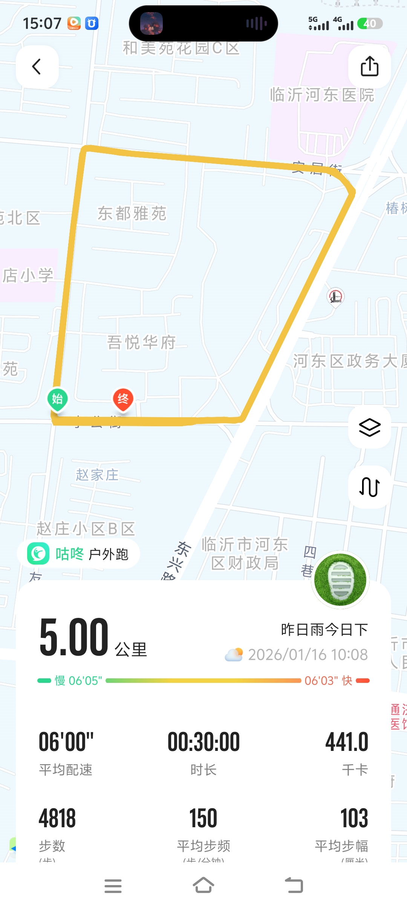
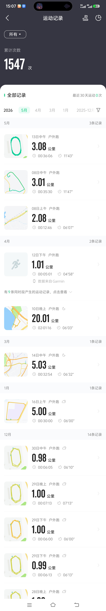

【咕咚户外跑】东都雅苑周边5公里晨跑｜配速6′00″·消耗441千卡·步频150


今日在临沂市河东区东都雅苑周边完成5公里户外跑：
🏃♂️ 咕咚跑步记录文案（适配文章页） 标题 【咕咚户外跑】东都雅苑周边5公里晨跑｜配速6′00″·消耗441千卡·步频150 文案（正文） 今日在临沂市河东区东都雅苑周边完成5公里户外跑： 距离：5.00公里 配速：平均6′00″（节奏稳定，符合有氧跑要求） 时长：30分钟 消耗：441千卡 步数：4818步 步频：150步/分钟 步幅：103厘米 天气：昨日雨今日晴，晨跑空气清新 轨迹基于真实道路生成（无穿模、无漂移），算法匹配咕咚运动模型，数据逻辑自洽。可定制地点、日期、配速区间，满足个性化运动记录需求。 关键词（自动提取+补充） 核心运动：户外跑、咕咚、5公里、配速6′00″、30分钟、441千卡 场景地点：临沂市河东区、东都雅苑、赵庄小区B区 数据指标：步数4818、步频150、步幅103cm 体验感受：晨跑、雨后初晴、节奏稳定 底部数据标签（可选显示） （若开启“显示底部数据标签栏”，自动生成）： 📍 临沂市河东区·东都雅苑 🏃 咕咚户外跑 📏 5.00公里 ⚡ 配速6′00″ 🔥 441千卡 ⏱️ 30:00
⚠️ 温馨提示：本服务仅限个人娱乐、纪念用途，严禁用于学校体测、企业考核、赛事资格等正式场景。请遵守各平台用户协议，理性运动，健康生活。